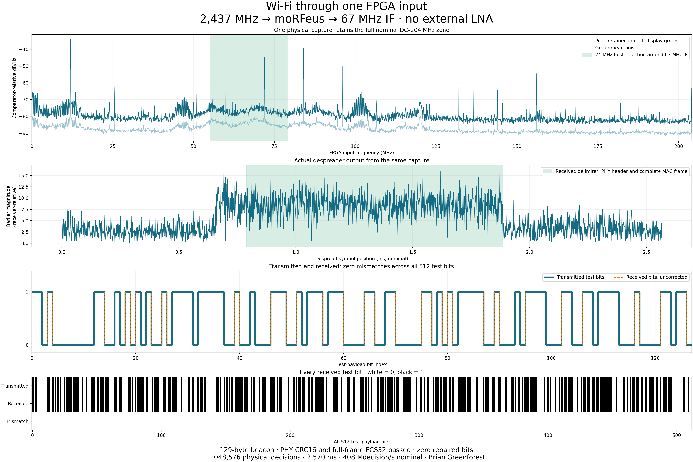
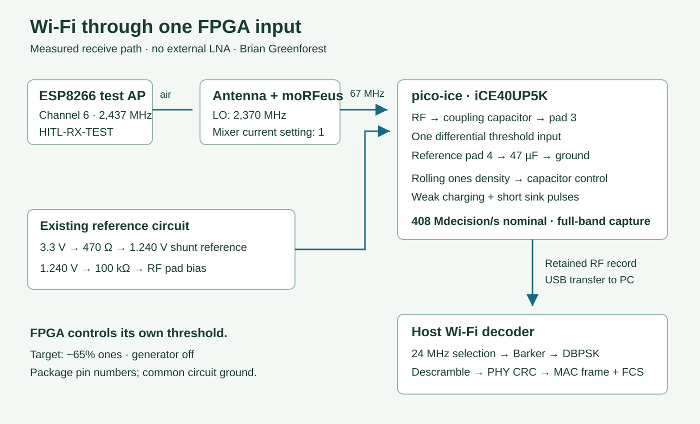

Two radio projects meet at a packet
In Why Wi-Fi Needs a Real-Time Radio, I built a WPA2 access point around the E310: an FPGA receive and reply path, followed by a C++ stack that takes a station through association, encryption, address assignment and HTTP. That work made the whole journey from I/Q to a web page inspectable.
Then I took a very different receiving front end and asked it to deliver the same kind of object: an ordinary Wi-Fi frame. My one-pin SDR samples threshold crossings through an iCE40 differential input. It already captures the nominal DC–204 MHz span and receives FM with FPGA-controlled bias. For this result, its existing wideband image stayed in place. The Wi-Fi receiver was implemented on the PC.
The result is exciting because the physical front end and the protocol implementation can now meet at a concrete, independently checkable boundary. The received bytes are an 802.11 beacon. The existing Wi-Fi stack's MAC parser recognizes the frame, its network name and its channel. The full packet is downloadable below.
129 bytes, received intact
HITL-RX-TEST · channel 6 · 1 Mb/s 802.11b beacon
PHY header CRC16: passed.
Full-frame FCS32: passed, including an independent bitwise CRC calculation.
Known payload: 512 of 512 bits matched.
Bit repairs: zero.

The successful frame came from the third of four separate 2.570 ms captures at this operating point. Each record holds 1,048,576 actual comparator decisions. One of those records yielded an intact frame; the other records remain separate acquisitions. USB transfer pauses are not filled with fabricated samples.
The decoder found the frame using synchronization, modulation decisions and checksums. It did not use the expected network name or test bytes to choose individual bits. Only after the complete frame passed its checks did I compare its 64-byte test field with the transmitted pattern. All 512 bits agreed.
2.437 GHz over the air, 67 MHz at the FPGA

An ESP8266 transmits the test network continuously on channel 6. Its access point is visible on a phone. The receiving Wi-Fi antenna is about 5 cm away and feeds moRFeus. With its local oscillator at 2,370 MHz, the converter places the wanted channel at:
f_IF = |2,437 MHz − 2,370 MHz| = 67 MHz
The converter's output passes through the existing coupling capacitor into the FPGA's RF input. There is no external LNA. The NodeMCU also supplies the rail used by the 1.240 V reference circuit; its ADC does not control the receiver. The signal generator remains off.
The FPGA takes decisions on both edges of its nominal 204 MHz clock, producing 408 million decisions per second. That retains the DC–204 MHz first Nyquist zone. The 2.4 GHz conversion happens in moRFeus; the FPGA samples the resulting IF.
A full-band capture can support several later analyses. Here the PC selects a 24 MHz window around 67 MHz for Wi-Fi processing. The retained RF record is unchanged. There is no narrow audio filter or final audio sigma-delta stage in this acquisition path.
The threshold is an operating point, not a fixed assumption
The RF pad is biased through 100 kΩ from the 1.240 V reference. The other differential pad carries the 47 µF capacitor that holds V_REF. The FPGA measures its comparator's recent ones density and adjusts that capacitor with its existing weak charging path and short sink pulses. The control loop runs inside the FPGA.
b[n] = 1 when v_RF[n] > V_REF[n], otherwise 0 D = number of ones / number of observed decisions
For this reception I used the loaded controller's 64.990234375% target profile—approximately 65% ones. The successful record measured 64.4095%. A 50% target is not automatically the best operating point for every input condition. Moving the threshold changes the observations presented to the numerical receiver, so this setting belongs in the measurement record alongside the mixer and clock settings.
The FPGA image is exactly the wideband image already published with the FM and bias-control article. Its Verilog, circuit and actuator details, and complete build package are available there. Changing the receiving application did not require turning the FPGA into an audio processor or replacing its full-band capture path.
From threshold decisions to Wi-Fi bytes
802.11b's 1 Mb/s mode spreads each differential BPSK symbol across eleven Barker chips at 11 Mchip/s. After selecting the IF on the host, I resample the numerical complex signal to 44 MS/s: four samples per chip and 44 samples per symbol. The despreader correlates each symbol against the eleven-chip pattern.
c = [1, −1, 1, 1, −1, 1, 1, 1, −1, −1, −1] z[k] = Barker correlation of the received complex samples
Carrier recovery uses the squared despread symbols. Squaring removes the BPSK sign, allowing the local carrier phase to be estimated over a short window. The successful replay used eight symbols:
θ[k] = ½ unwrap(arg(sum of z[m]² over the local window)) q[k] = real(z[k] · exp(−jθ[k])) d[k] = 1 when q[k] and q[k−1] have opposite signs
Self-synchronizing descrambling then yields the transmitted bitstream. The receiver searches for the start-frame delimiter, validates the 48-bit PHY header, uses its length field to extract the MAC frame, and verifies the frame's trailing CRC32. The independent MAC parser from my existing Wi-Fi work confirms a beacon named HITL-RX-TEST on channel 6.
The existing E310 work contributes protocol knowledge and a reusable parser here. This new host decoder supplies the physical receive decisions from the one-pin front end. That separation is useful: synchronization and demodulation can evolve while packet parsing remains a shared, testable layer.
Open the actual packet
This is the exact received 129-byte MAC frame, including its four FCS bytes. I have included the ESP8266's device addresses unchanged. Open the PCAP in Wireshark, read the annotated hex dump, or verify the binary directly.
The PCAP adds only a synthetic radiotap wrapper marking the included FCS. Its timestamp is zero because the original record provides sample-relative timing, not a packet hardware wall-clock timestamp. The contained frame bytes are unchanged.
SHA-256 of the received frame:a95cc5cb3ecdb9b97f1168708d2981d12f04185c02ca8077f583582e80f25a63
The vendor test field contains 64 bytes generated by (37 × i + 11) mod 256, for i = 0…63. This makes the complete received bit pattern easy to check without relying on a visual impression of the spectrum.
Run the decoder and rebuild the plots
Download the Wi-Fi source and measurement package. It contains the portable Python receive path, packet verification code, exact packet dump, plot data, diagram, measurement summary and SHA-256 manifest. The new code is MIT-licensed.
python -m pip install -r source/requirements.txt python source/verify_packet.py python source/plot.py
The verification command checks the published frame with two CRC32 implementations and compares all 512 test bits. The plotting command rebuilds the received-data PNG from the published numerical arrays. For a new raw R1 capture from the same FPGA image:
python source/receive.py your-capture.bin --if-mhz 67 --output decoded
I ran this exact decoder against the retained physical capture and recovered the same frame hash shown above. The replay guide records the R1 format and commands; the measurement summary identifies the original capture and FPGA image by hash. The E310 article supplies the broader Wi-Fi implementation and its build instructions.
A programmable receiving front end
FM sound and Wi-Fi packets now come from the same family of threshold observations. Frequency conversion brings a microwave channel into the sampled band; autonomous bias keeps the differential input at a useful operating point; numerical processing recovers the modulation and its data.
That is the useful architectural result: the FPGA delivers wideband observations, and the receiver above it can be changed in software. A spectrum is no longer the end of the demonstration. Here it leads all the way to a named network, a complete packet and checksums anyone can verify.
If you are building programmable radio front ends, open wireless systems or compact FPGA instruments, talk to me. The code, circuit and received bytes are ready to explore.